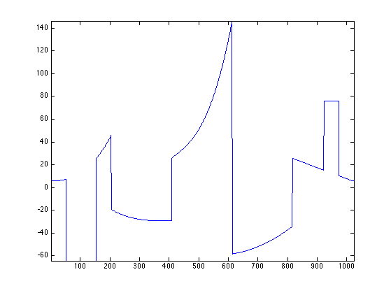
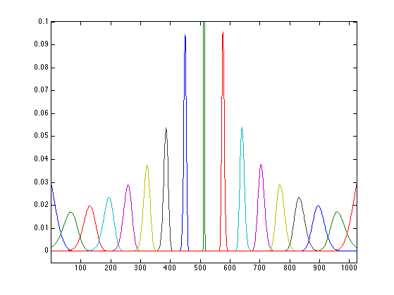
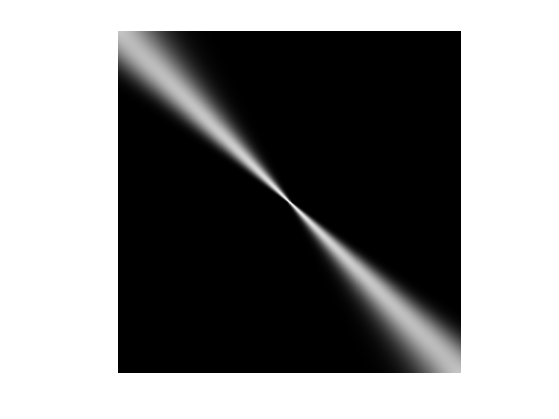
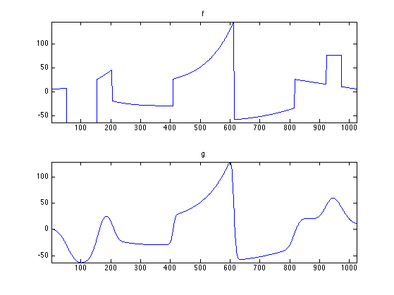
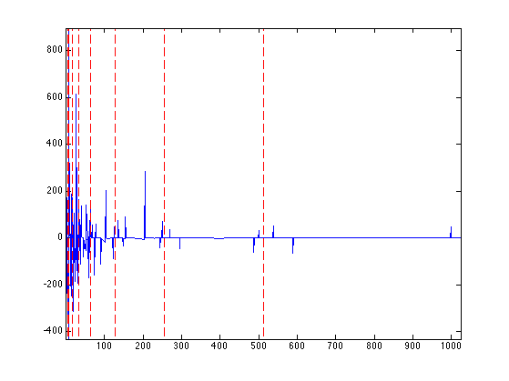
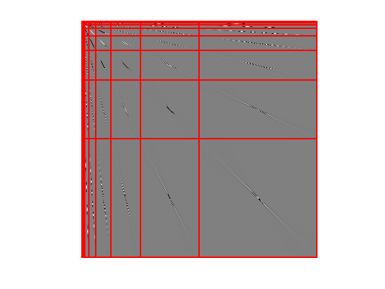
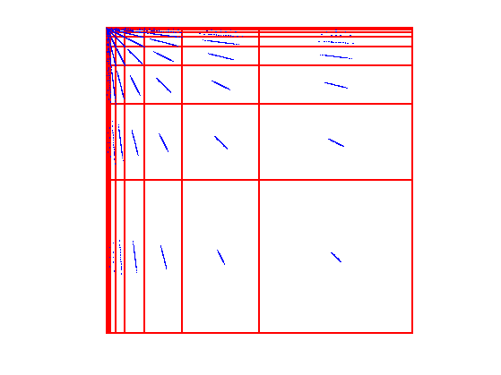
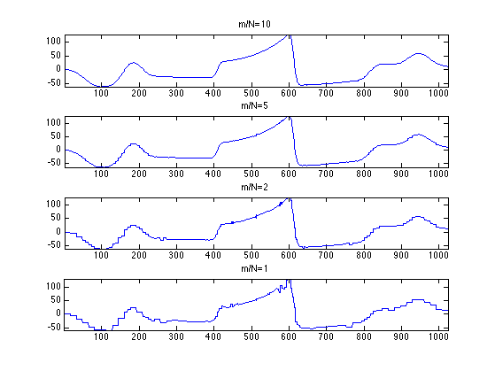

Wavelet Compression of Integral Operators
This numerical tour explores approximation of integral operators over wavelets bases.
Contents
Installing toolboxes and setting up the path.
You need to download the following files: signal toolbox and general toolbox.
You need to unzip these toolboxes in your working directory, so that you have toolbox_signal and toolbox_general in your directory.
For Scilab user: you must replace the Matlab comment '%' by its Scilab counterpart '//'.
Recommandation: You should create a text file named for instance numericaltour.sce (in Scilab) or numericaltour.m (in Matlab) to write all the Scilab/Matlab command you want to execute. Then, simply run exec('numericaltour.sce'); (in Scilab) or numericaltour; (in Matlab) to run the commands.
Execute this line only if you are using Matlab.
getd = @(p)path(p,path); % scilab users must *not* execute this
Then you can add the toolboxes to the path.
getd('toolbox_signal/'); getd('toolbox_general/');
Representation of Operators in Bases
We consider 1-D signals \(f \in \Hh=L^2([0,1]) \) (we assume periodic boundary conditions). We consider an orthogonal basis \( \Bb = (\psi_m)_{m \in \Om} \) of \(\Hh\). The forward (decomposition) operator is \[ \Psi : f \in \Hh \rightarrow (\dotp{f}{\psi_m})_{m \in \Om} \in \Vv = \RR^\Om. \] The backaward (recomposition) operator is \[ \Psi^* : c \in \Vv \rightarrow \sum_{m \in \Om} c_m \psi_m \in \Hh. \]
Note that \(\Bb\) being orthonormal is equivalent to \[ \Psi^* \circ \Psi = \text{Id}_\Hh \qandq \Psi \circ \Psi^* = \text{Id}_\Vv. \]
A linear operator \(T : \Hh \rightarrow \Hh\) can be represented as \[ T f(x) = \int_0^1 K(x,y) f(y) d y. \]
Here \(K : [0,1]^2 \rightarrow \RR\) is a kernel function, that is sometimes assumed to be a distribution (for instance to define differential operators).
\(K\) is in some sense the representation of \(T\) in the Dirac basis of \(\Hh\). One can represent the operator \(T\) in the basis \(\Bb\) as follow \[ T = \Psi^* S \Psi \qwhereq S = \Psi T \Psi^* \in \ell^2(\Vv). \] Here the operator \(S : \Vv \rightarrow \Vv\) can be understood as an (possibly infinite) matrix whose entries can be computed as \[ \forall (m,m') \in \Omega^2, \quad S_{m,m'} = \dotp{T \psi_m}{\psi_{m'}}. \]
In the following, in order to be able to perform numerical computations, we consider discretized signals \(f \in \Hh = \RR^N\) and thus assume \(\Psi\) defines an orthonormal basis of \(\RR^N\). In this case \(\Vv = \RR^N\), and both \(K, S \in \RR^{N \times N}\).
The switch of representations \[ \Theta : T \in \RR^{N \times N} \longmapsto S = \Psi T \Psi^* \in \RR^{N \times N} \] is called the tensorial transform assiociated to \(\Psi\) (also called the anisotropic transform in the case of Wavelet bases).
It can be computed numerically by first applying \(\Psi\) to the rows of \(T\) and then to its columns.
Foveation Operator
We consider here a special case of integral operator, the so-called Foveation operator. It corresponds to a spacially varying convolution.
Size \(N\) of the signal.
N = 1024;
We can compute a signal and the action of the kernel on the signal.
f = load_signal('piece-polynomial', N);
Display it.
clf;
plot(f); axis tight;
 A spacially varying convolution is a blurring operator that is not translation invariant. For a Foveation operator, the blur has a spatially varying bandwidth parameterized by a scale \(\si(x)\), that dillates a given convolution profile \(\phi(x)\). It thus corresponds to \[ K(x,y) = \frac{1}{\si(x)} \phi\pa{ \frac{x-y}{\si(x)} }. \]
We choose here a Gaussian kernel.
phi = @(x)exp( -abs(x).^2 / 2 );
One usually chose a foveation scale that increases linearly with the distance to some center point \(c\) of Foveation. This reproduces the effect of human vision, that has a finer resolution in the center of the field of view. We thus choose \[ \si(x) = \al \abs{x-c} + \be \] for some constants \(\al,\be > 0\).
Center point \(c\) of foveation
c = 1/2;
Rate of foveation and offset.
alpha = .05; beta = 1e-3;
Definition of \(\sigma\)
sigma = @(x)alpha*abs(x-c)+beta;
Normalization operator (this is needed for the discrete kernel) the rows.
normalize = @(K)K ./ repmat( sum(K,2), [1 N] );
Definition of the kernel.
t = (0:N-1)/N; [Y,X] = meshgrid(t,t); K = normalize( phi( (X-Y) ./ sigma(X) ) );
Display a few lines of the kernel.
I = round( linspace(1,N,17) );
clf;
plot(K(:,I)); axis tight;
axis([1 N -.005 .1]);
 Display the kernel as an image (using a change of contrast to better view the rows).
clf; imageplot(K.^.1);
Compute \(f = T g\). In the discrete setting, this corresponds to the multiplication by the discretized kernel \(K\) (which is the representation of \(T\) in the Dirac basis).
g = K*f;
Display the action of the kernel.
clf; subplot(2,1,1); plot(f); axis('tight'); title('f'); subplot(2,1,2); plot(g); axis('tight'); title('g');
For later use, store the average application time.
t0 = 0; ntrials = 50; for i=1:ntrials tic; g = K*f; t0 = t0 + toc(); end t0 = t0 / ntrials;
Representation of Operator in a Wavelet Basis
Wavelet operator compression has been initially introduced for the compression of integral operator with a kernel \(K\) that is sufficiently smooth [BeyCoifRokh91]. In this setting, this allows to reduce the storage of the discretized matrix \(T \in \RR^{N \times N}\) from \(O(N^2)\) to \(O(N\log(N))\) by thresholding the entries of \(S\).
A more advanced representation, the so-called non-standard one, allows an even further compression to \(O(N)\) entries. We do not detail here the non-standard representation, that is more involved.
Representation of operator in wavelet bassis has also been applied to local differential operator (in which case the kernel \(K\) is a distribution), see for instance [Beylkin92]. In this case, the advantage is not the storage of the matrix, but the ability to derive optimal pre-conditioner that are diagonal in the transformed domain, see for instance [DahmKun92]. This allows one to recover and extend classical multiscale preconditonners, such as for instance [BramPascXu90]. Such preconditionners are crucial to solve linear systems such as \(T f = y\) (which typically corresponds to the resolution of a partial differential equation) using for instance the conjugate gradient method.
An orthogonal wavelet basis of \(\Hh\) reads \[ \forall m = (j,n), \quad \psi_{m}(x) = \frac{1}{2^{j/2}} \psi\pa{ \frac{x-2^j n}{2^j} } \] for scales \(j \in \ZZ\) and positions \( n = 0,\ldots,2^{-j}-1 \).
We use here the simplest wavelet, the Haar wavelets. Wavelet with a larger number of vanishing moments could be used as well.
options.filter = 'haar';
Jmin = 1;
Define the forward transform \(\Psi\) and the backward transform \(\Psi^*\).
options.separable = 0; Psi = @(f)perform_wavelet_transf(f, Jmin, +1, options); PsiS = @(f)perform_wavelet_transf(f, Jmin, -1, options);
We define the tensor product transform \[ \Theta(T) = \Psi T \Psi^* \] where \(T\) is represented through its kernel \(K\).
options.separable = 1; Theta = @(K)perform_wavelet_transf(K, Jmin, +1, options);
Wavelet Foveation
Computing foveation over wavelet bases has been initially proposed in [ChaMalYap00]. It extends an initial method proposed by [Burt88].
Display the wavelet transform \(\Psi f\) of the signal \(f\).
clf; plot_wavelet(Psi(f), Jmin);
compute \(S = \Theta(T)\).
S = Theta(K);
Display \(S\).
clf; plot_wavelet(S, Jmin, options);
The operator is compressed by computing a sparse matrix \( S_\tau \) that approximate \(S\). Since most of the entries of \(S\) are small, one achieve this compression using a non-linear hard thresholding \[ (S_\tau)_{i,j} = \choice{ S_{i,j} \qifq \abs{S_{i,j}}>\tau, \\ 0 \quad \text{otherwise}. } \] One thus defined \(S_\tau = \Gamma_\tau(S)\) where \(\Gamma_\tau\) is the hard thresholding operator.
Gamma = @(S,tau)S .* ( abs(S)>tau );
The threshold \(\tau\) can be adapted to ensure that \(S_\tau\) has only \(m\) non-zero entries. This defines \(\tau=\tau(m)\).
subs = @(u,m)u(m);
tau = @(m)subs( sort(abs(S(:)), 'descend'), m);
Set the targeted number of coefficients.
m = 4*N;
In order to save computation time when applying \(S_\tau\), it should be stored as a sparse matrix \(S_1\).
S1 = sparse(Gamma(S,tau(m)));
Display the support of the \(m\) largest coefficients that are used for the approximation.
clf;
plot_wavelet(zeros(N), Jmin, options); hold on;
spy(S1);
 One can use this compressed operator to approximate \[ g = \Psi^* S \Psi f \] by \[ g_\tau = \Psi^* S_\tau \Psi f. \] When \(\tau \rightarrow 0 \), \(g_\tau \rightarrow g\). When \(\tau\) is large, since \(S_\tau\) is a sparse matrix, computing \(g_\gau\) is faster than computing \(g\).
Exercice 1: (check the solution) Display the result \(g_{\tau(m)}\) for different values of \(m\).
exo1;
Exercice 2: (check the solution) Study the speed gain as a function of \(m\) of using the sparse multiplication with respect to the direct computation of \(T f\).
exo2;
Operator compression is not only useful to compute efficiently approximation of product \(T f\). It can also be used for instance to compute approximation of the inverse \(T^{-1}\), see for instance [BeyCoifRokh91].
Bibliography
- [ChaMalYap00] E-C. Chang, S. Mallat, C. Yap, Wavelet Foveation, Applied and Computational Harmonic Analysis, Volume 9, Issue 3, Pages 312?335, 2000
- [Burt88] P.J. Burt, Smart Sensing with a Pyramid Vision Machine, PIEEE(76), No. 8, pp. 1006-1015, 1988.
- [BramPascXu90] J.H. Bramble, J. Pasciak e J. Xu, Parallel multilevel preconditioners, Math. Comput., 55, 1-22, 1990.
- [BeyCoifRokh91] G. Beylkin, R. Coifman, V. Rokhlin, Fast wavelet transforms and numerical algorithms, Comm. Pure Appl. Math., 44, 141-183, 1991.
- [Beylkin92] G. Beylkin, On the Representation of Operators in Bases of Compactly Supported Wavelets SIAM Journal on Numerical Analysis, 29:6, 1716-1, 1992.
- [DahmKun92] W. Dahmen and A. Kunoth, Multilevel preconditioning, Numer. Math., 63, pp. 315? 344, 1992.